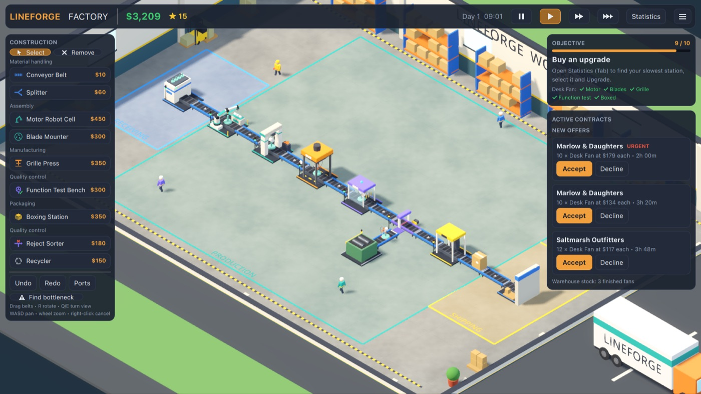

LINEFORGE FACTORY
Design the factory. Build the machines. Watch real products take shape. · Fabrikayı tasarla. Makineleri kur. Gerçek ürünlerin şekillendiğini izle.

A miniature production-line simulator where every product has a visible manufacturing journey. A robot arm installs the motor, a spindle mounts the blades, a press seats the grille and the test bench spins the fan up. Then it is boxed and shipped.
Lay conveyor belts, choose from 11 machines, find bottlenecks, service worn machines, take on contracts and grow your factory. For iPhone, iPad and Android, in English and Turkish. Offline, no ads, no accounts, no data collection.
Her ürünün üretim yolculuğunu gözünle gördüğün minyatür bir üretim hattı simülasyonu. Robot kol motoru takar, mil pervaneyi yerleştirir, pres ızgarayı oturtur, test tezgâhı vantilatörü çalıştırır. Sonra kutulanır ve gönderilir.
Konveyör bantları döşe, 11 makineden seç, darboğazları bul, yıpranan makinelere bakım yap, sözleşmeler al ve fabrikanı büyüt. iPhone, iPad ve Android için, Türkçe ve İngilizce. Çevrimdışı; reklam, hesap ve veri toplama yok.